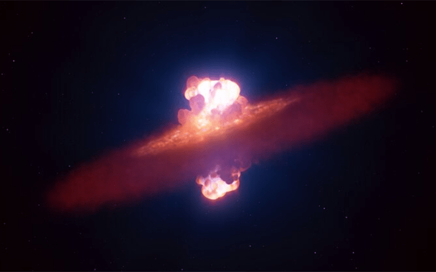
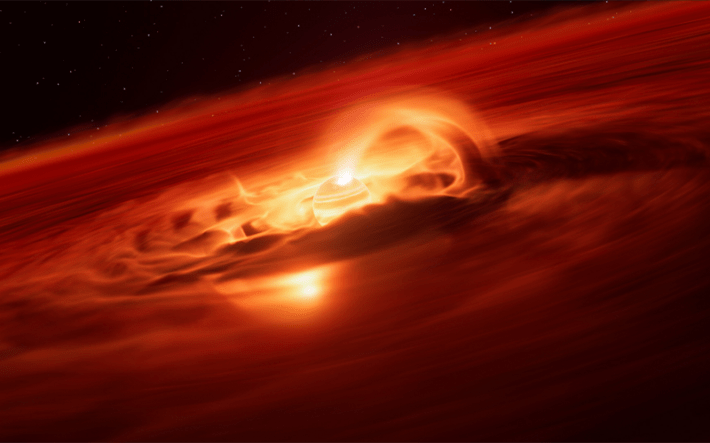
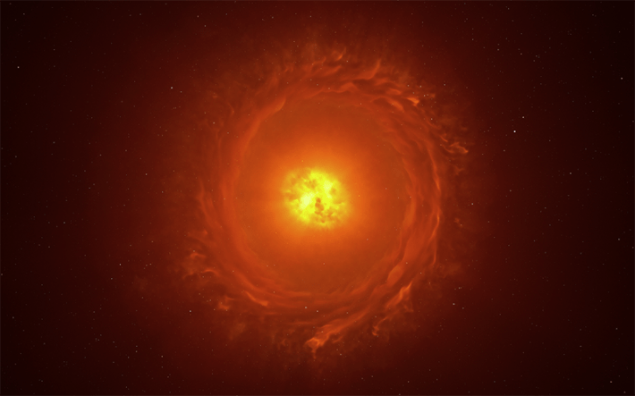

For many people, Luís Calçada’s imaginative interpretations of the universe are the universe—even if the events they illustrate can’t be observed with the naked eye or happened billions of light-years ago. Calçada works as an illustrator for the European Southern Observatory (ESO) near Munich, where he creates stunning images of cosmic events in flamboyant color, such as one that recently graced the cover of Nature depicting a fiery explosion around a protostar.
Calçada’s journey into astronomical art began when he spied Contact, a 1985 work of science-fiction by Carl Sagan, as a kid in a bookstore. The cover showed an inky Earth floating in a sea of darkness, a mysterious fingerprint of light emerging out of the milky abyss. Calçada was so struck by that vision that he asked his parents to buy him the book on the spot. After he read it, he devoured all of Sagan’s other books. And that set him on his path.
THE INTERPRETER: Luís Calçada’s images bring the beauty and magic in complex astronomy to life. Courtesy of Luís Calçada
Calçada started out studying astronomy and physics, but he soon learned that he was more interested in the ways a beautiful image can trigger an emotional tug to understand. So he left astronomy for art. We caught up with Calçada to talk about the relationship between beauty and scientific understanding.
Your images are lush and cinematic. Do you think beauty can ever get in the way of scientific truth?
I think beauty is a trigger for curiosity, because the fascination with something extraordinary—the way a star works, or the explosion of a supernova—makes people want to understand it. Sometimes, when I see people fascinated by more mystical things, or I have conversations with friends about, let’s say, astrology, I’m like, “Why are you fascinated by those topics?” Science alone is so beautiful, and there’s so much magic there.

SUPERNOVA: This artist’s impression shows a star going supernova. About 22 million light-years away the supernova, SN 2024ggi, exploded in the galaxy NGC 3621. Using the ESO’s Very Large Telescope, astronomers managed to capture the very early stage of the supernova when the blast was breaking through the star’s surface. Credit: ESO / L. Calçada
Have you ever argued with a scientist over artistic license you took in one of your illustrations?
There are a few kinds of scientists here at ESO. When you’re working on a press release, sometimes you get those who are extremely happy with whatever you give them. Because quite often they’re just working on data and code and plots. But when they see a nice interpretation of their data, they’re quite happy.
But there are other scientists who tend to say, “Oh, but maybe this could be like that.” And sometimes there’s a bit of a struggle to massage them into understanding that what they’re suggesting is actually not relevant for the story, or important for the general audience. Of course, we always want to make these illustrations as true to the science as possible. But it’s our job as communicators to understand what message we want to transmit to people, right? Because sometimes the science is quite clear for us, and for our scientists, but for the audience it’s not. So it’s about what we’re trying to communicate.

GONE ROGUE: Astronomers have identified an enormous "growth spurt" in a so-called rogue planet. Unlike the planets in our solar system, these objects do not orbit stars, free-floating on their own instead. The new observations, made with the European Southern Observatory’s Very Large Telescope, reveal that this free-floating planet is eating up gas and dust from its surroundings at a rate of 6 billion tonnes a second. This is the strongest growth rate ever recorded for a rogue planet, or a planet of any kind, providing valuable insights into how they form and grow. Credit: ESO / Luís Calçada
Can you give me an example of something a scientist wanted to change?
One recent project comes to mind—the simulated explosion of a star going supernova (published in November of 2025). One of the scientists—he’s a brilliant person—paid too much attention to the details. And we had a lot of back and forth, trying to negotiate some things that shouldn’t go into the illustration and the animation. For example, in this illustration, we see a few things happening at once. In the real world, these things would happen at different timescales. The first outflow from the poles of the exploding star, maybe that would happen very fast. Whereas the other parts of the explosion would happen over seconds. And then the rest of flowing out happens maybe in days, and we’re showing it all in just 20 seconds of animation.
That’s why it’s important for us to always include captions for the images on our website. We send those captions to the journalists, very clearly explaining, this is an artist’s impression. But we also understand that these animations and illustrations have a life of their own. They get reproduced elsewhere on websites, and the caption gets lost. They can sometimes be harmful as well.
What kind of harm do you think they can cause?
Harmful is probably a strong word. But they can create a false impression about what the universe really looks like. We’ve done so many illustrations of colorful events, but to human eyes, most of the universe is just black, empty. The timescales are also sped up for a lot of these things. Back in the day when I was doing some activities with the general public as an astronomer, when you’re trying to show them things in the telescope, they’re expecting to see this very colorful, dramatic scene. And you’re like, “Can you see it?” And they’re like, “No, I don’t.”
Do your images ever serve as visual hypotheses? Or are they always explanations of a settled idea or a finding that’s been established?
We try to be very careful about how much these images are guessing. I think the role here is the science, the discovery. And we’re just trying to help the science get to the public. Many times, a nice, colorful, exciting image helps a lot for a finding to get onto the cover of a magazine or in The New York Times.

DISTANT STAR: Reconstruction of the star WOH G64, the first star outside our galaxy to be imaged in close-up. It is located at a staggering distance of over 160,000 light-years away in the Large Magellanic Cloud. This impression showcases its main features: an egg-shaped cocoon of dust surrounding the star and a ring or torus of dust.Credit: ESO / Luís Calçada
How do you balance realism against imagination?
This one of the exploding supernova actually triggered a bit of a debate. There was some negativity surrounding this particular image, because some people thought it was too realistic looking. And that’s a danger. I saw people complaining. Some people were like, “Why are you showing this? Why are you not showing the supernova itself?” Because the actual supernova image was just a few pixels, so it wasn’t very interesting. What we tried to show is what the astronomers inferred through these complex methods.
The scientists were really happy at how well we portrayed the phenomenon in the end, but it triggered an internal discussion about ways of using these images. Even this week, we had more discussions about future use of AI in our work, ethical issues. Because it’s true that people may start getting fed up with this kind of overflow of bright, colorful images. And our work that’s tightly developed with scientists might get lost in that noise. We have to explore ways of cutting through the noise.
Read more: “The Art of Quantum Forces”
What are some ways you might do that?
I use Reddit quite a lot, and I saw some people commenting along the same lines, calling it AI slop, and so I kind of pitched in on the conversation. I actually tried to explain a bit about the process with the scientists. It was quite cool to see the surprise in some of the people on Reddit. So maybe what we have to do is to engage in some of those conversations, convey some of the science behind these images.
Because ultimately the goal is communicating the science—not just to make pretty pictures. 
Enjoying Nautilus? Subscribe to our free newsletter.
Lead image: This illustration shows what the luminous blue variable star in the Kinman Dwarf galaxy could have looked like before its mysterious disappearance. A luminous blue variable star some 2.5 million times brighter than the sun. Stars of this type are unstable, showing occasional dramatic shifts in their spectra and brightness. Credit: ESO / Luís Calçada